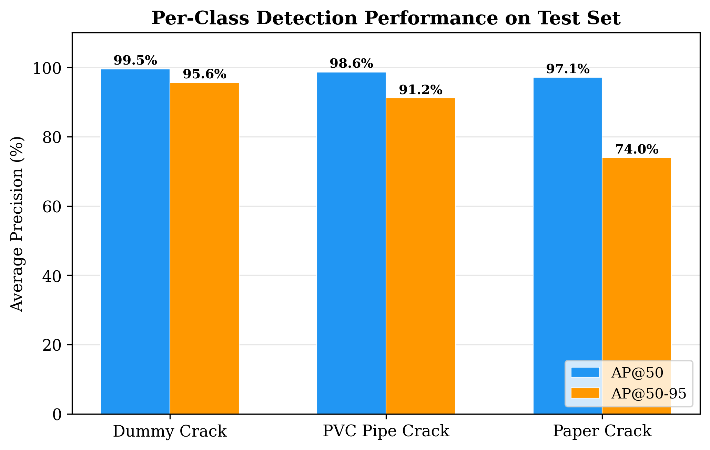
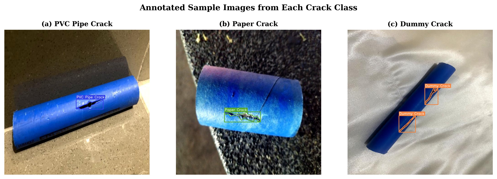
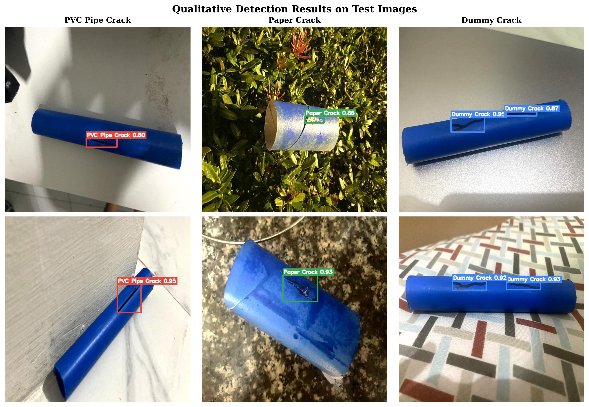
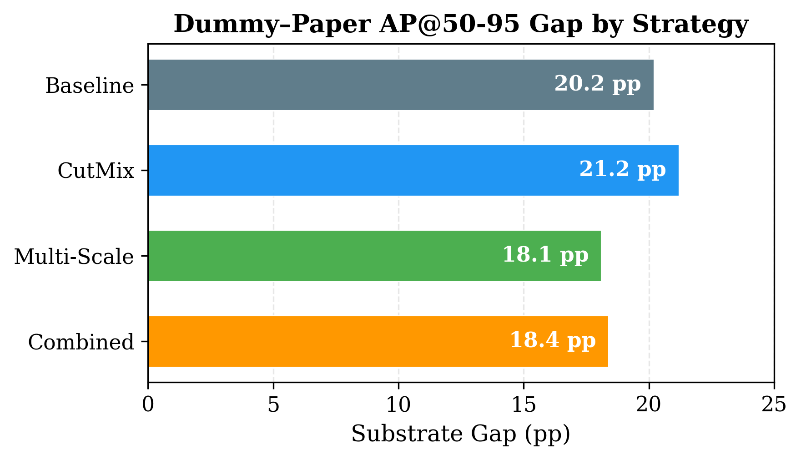
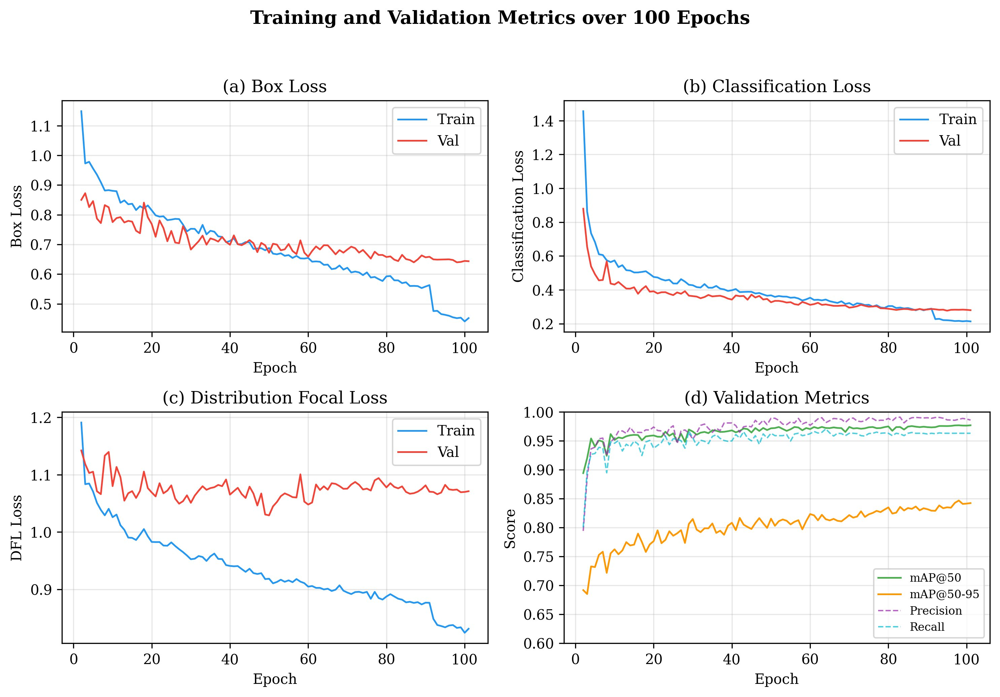

Diagnosis, Augmentation, and the Limits of Training-Time Mitigation
University of Santo Tomas · Proc. International Conference on Robotics and Automation Sciences (ICRAS) 2026
Automated visual inspection of piping systems is essential for structural integrity monitoring, yet the effect of pipe surface properties on detection accuracy remains underexplored. This paper examines whether the visual complexity of the pipe surface degrades crack detection accuracy, even under class-balanced training conditions. Three crack types were created on surfaces ranging from smooth PVC to textured tissue paper, with 400 labels per class. Two object detection models, YOLO-World XL and YOLOv8x, were each trained five times with different random seeds on an NVIDIA DGX A100. YOLO-World XL achieved an overall mAP (IoU 0.50–0.95) of 0.863, but per-class performance varied widely: 94.2% for cracks on smooth PVC versus only 73.9% on textured tissue — a gap of over 20 percentage points present in both models. An analysis across IoU thresholds revealed that the model can detect cracks on textured surfaces (97.1% AP at IoU 0.50) but fails to produce precise bounding boxes, dropping 23.1 points at stricter thresholds. Three data augmentation strategies (CutMix, multi-scale training, and their combination) were tested but none significantly reduced the gap (all p > 0.05 after Bonferroni correction). These results indicate that surface texture, rather than data quantity or model choice, is the primary factor limiting detection accuracy on challenging pipe materials.
Mean of 5 random seeds. All classes have identical training-label counts.
| Class | AP50:95 | AP50 | Loc. gap |
|---|---|---|---|
| Dummy crack (smooth) | 94.2% | 99.5% | 5.3 pp |
| PVC pipe crack | 90.8% | 99.2% | 8.4 pp |
| Paper crack (textured) | 73.9% | 97.2% | 23.3 pp |
Detection is fine at IoU 0.50; the gap is a localization failure that grows at stricter thresholds.
| Metric | YOLO-World XL | YOLOv8x | Cohen's d |
|---|---|---|---|
| mAP50:95 | 0.863 | 0.855 | 1.35 |
| mAP50 | 0.986 | 0.981 | 1.31 |
| Recall | 0.980 | 0.969 | 1.40 |
| F1 | 0.983 | 0.974 | 1.44 |
Paired t-test. Cohen's d > 0.8 indicates a large effect — but the substrate gap appears in both.
| Strategy | mAP50:95 | Substrate gap | p (gap) |
|---|---|---|---|
| Baseline | 0.863 | 20.2 pp | — |
| CutMix | 0.840 | 21.2 pp | 0.562 |
| Multi-scale | 0.839 | 18.1 pp | 0.334 |
| Combined | 0.805 | 18.4 pp | 0.102 |
None significant after Bonferroni correction (α = 0.0167). The gap is a fundamental, substrate-driven localization challenge.
Selected figures from the paper.





Available on Roboflow Universe under CC BY 4.0.
| Train | Val | Test | Total | |
|---|---|---|---|---|
| Images | 2,292 | 217 | 108 | 2,617 |
| Labels / class | 400 | — | — | 400 |
@inproceedings{pangaliman2026substrate,
title = {Substrate-Dependent Performance Variation in Pipe Crack Detection:
Diagnosis, Augmentation, and the Limits of Training-Time Mitigation},
author = {Pangaliman, Ma. Madecheen S. and Biasbas, Mark Kenneth and
Flores, Faustino Miguel and Gatchalian, Carl Christian and
Velasco, Lorin Angela and Yadao, Dulce Maria},
booktitle = {Proc. International Conference on Robotics and Automation Sciences (ICRAS)},
year = {2026}
}